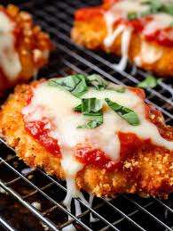

Ari's Chicken Parmesan

Somewhere a poor chicken is missing a breast. You'd better enjoy this.
People say the experience of eating chicken parmesan is akin to having a kindly Italian man cradle you in his arms and rock you to sleep. These people are freaks and should not be trusted. Nonetheless, chicken parmesan is a delicious dish that even a beginner can make, and I hope you enjoy this recipe.
Ingredients:
- 2 boneless, skinless chicken breasts
- 1 cup breadcrumbs
- 1/2 cup grated Parmesan cheese
- 1 teaspoon dried basil
- 1 teaspoon dried oregano
- 1/2 teaspoon garlic powder
- 1/2 teaspoon salt
- 1/4 teaspoon black pepper
- 1 cup marinara sauce
- 1 cup shredded mozzarella cheese
Steps
- Preheat your oven to 400°F (200°C) and line a baking sheet with foil.
- In a shallow bowl, mix together the breadcrumbs, grated Parmesan cheese, dried basil, dried oregano, garlic powder, salt, and black pepper.
- Dip each chicken breast into the breadcrumb mixture, coating both sides evenly.
- Place the coated chicken breasts on the prepared baking sheet and bake for 20 minutes or until the chicken is cooked through and the breadcrumbs are golden brown.
- Remove the baking sheet from the oven and spoon marinara sauce over each chicken breast.
- Sprinkle shredded mozzarella cheese on top of the sauce.
- Return the baking sheet to the oven and bake for an additional 5 minutes or until the cheese is melted and bubbly.
- Remove from the oven and let the chicken rest for a few minutes before serving.
Enjoy!
Back to Home